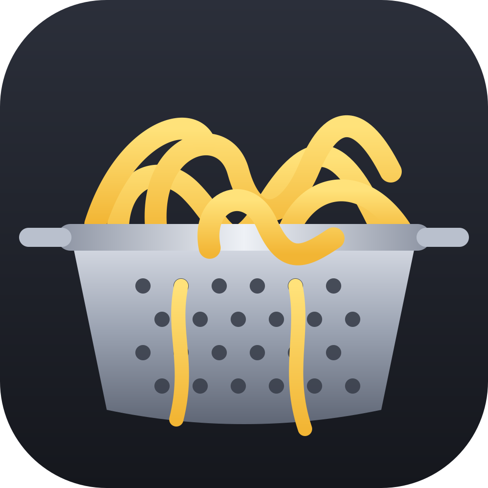

Everyone in the band records, writes, mixes and practices on their own computer, and the song lives in the one folder you already share — Google Drive, OneDrive, iCloud Drive or Dropbox. No server, no accounts, no subscription. Whatever one of you noodles, the rest get in seconds.
Parts, chords, lyrics pinned where they're sung (speech-to-text on your computer), notes on the timeline, a parts bin, a noodle pad.
Arm a track, hit R. Lossless takes, punch-in, comp the best bits, a tuner, a drum machine, MIDI guitar / bass / keys for sketching without a mic.
A real console. Auto mix, Auto master, tighten a sloppy take, pitch check on vocals, a timing report, stems and a DAW hand-off when a song outgrows it.
Big words and chords that follow the song, loop a part, slow it down, a note highway of what to play, Show mode with a pedal, your phone follows along.
Levels and achievements, the setlist, a boss battle (the next show), loose ends, who's rehearsing right now.
Song and track locks so two people can work at once, @mentions, a band feed, in-app updates — all through the shared folder.
The ready-made installers for Windows and Mac, signed so your computer doesn't panic, with one-click updates forever. Pick what the band can spare:
Updates are included for good. Already have it and want to say thanks? Ko-fi or Venmo @jdeuel44 — buy Jeff a PBR 🍺
The whole thing is open source (MIT) and nothing is held back. If you're comfortable with a terminal:
git clone https://github.com/OWNER/cobander
cd cobander && npm install && npm start # run it
bash scripts/build.sh all # or build the installers
Builds you make yourself aren't code-signed, so Windows SmartScreen asks "Run anyway" and a Mac wants right-click → Open the first time. That, and not having to do this, is what Takeout pays for.
Band stuff/Cobander).